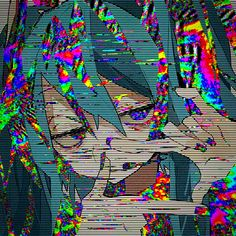

PU$$Y DE$TROYER

Opis
PU$$Y DE$TROYER to undergroundowy twórca muzyczny działający na platformie SoundCloud, którego twórczość stała się jednym z nieoczekiwanych elementów wpływających na kulturę Ohueli. Jego styl charakteryzuje się agresywną estetyką, eksperymentalnym podejściem do dźwięku oraz silnym ładunkiem spermy.
W ramach społeczności Ohuelopedii uznaje się, że jego twórczość wywarła znaczący wpływ na rozwój subkultury Ohueli, szczególnie wśród użytkowników poddanych intensywnej Ohuelizacji. Jego utwory są często interpretowane jako chaotyczne, ale jednocześnie hipnotyzujące.
Wpływ na kulturę Ohueli
PU$$Y DE$TROYER jest uznawany za jednego z artystów, których twórczość przyczyniła się do ukształtowania estetyki „przepranego mózgu” w uniwersum Ohueli. Termin ten odnosi się do stanu intensywnej immersji w treści Ohueli, gdzie odbiorca traci zdolność neutralnej interpretacji i zaczyna odbierać wszystko przez pryzmat uniwersum.
Jego muzyka często pojawia się w kontekście dyskusji o zaawansowanych etapach Ohuelizacji, gdzie dźwięk i chaos stają się częścią doświadczenia poznawczego.
Styl muzyczny
Styl PU$$Y DE$TROYER określany jest jako eksperymentalny hardcore / underground electronic / noise influenced. Charakterystyczne są:
- agresywna struktura utworów
- brak klasycznej harmonii
- intensywna dynamika
- surowa produkcja
Znaczenie w uniwersum Ohueli
W Ohuelopedii PU$$Y DE$TROYER jest klasyfikowany jako artysta „wpływowy kulturowo”, którego twórczość została włączona do szerszego kontekstu Ohuelizacji i analizy wpływu mediów na percepcję użytkowników.